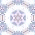
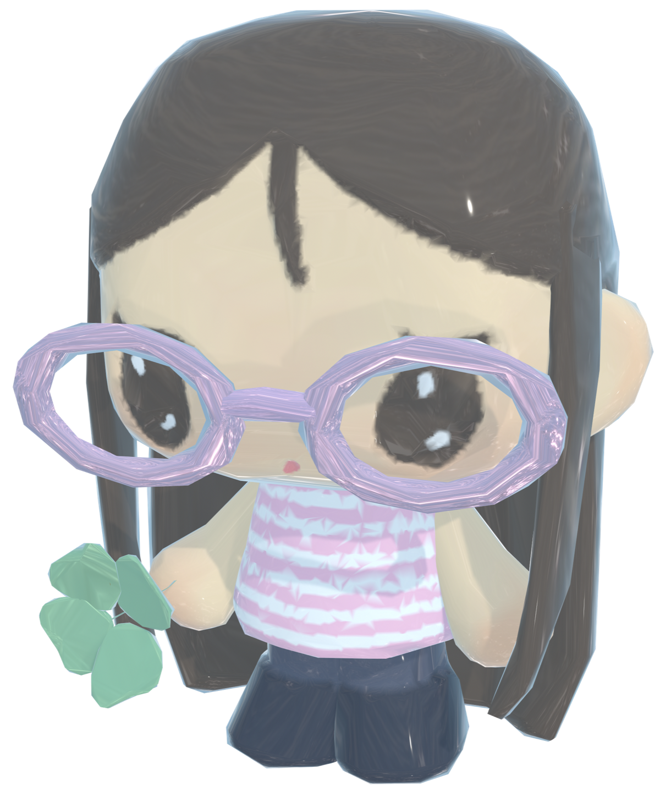

Projects
Illustration
Sculpture
Textiles
Baking
Collaborations
[+]
Editions
[+]
COYSEIO x Kiko Mizuhara
acne - lace & Chestnut Bakery
Have Fun Reading with KaleidoscopeStore

I see the world
sweet and soft summer
My Winter Memory Will Stay
Summer shortbread cookies
Produced with
KaleidoscopeStore

I see the world
COYSEIO x Kiko Mizuhara